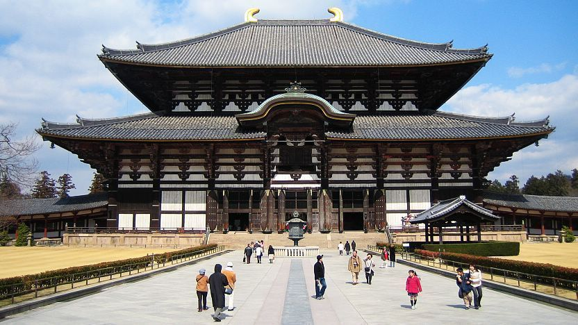
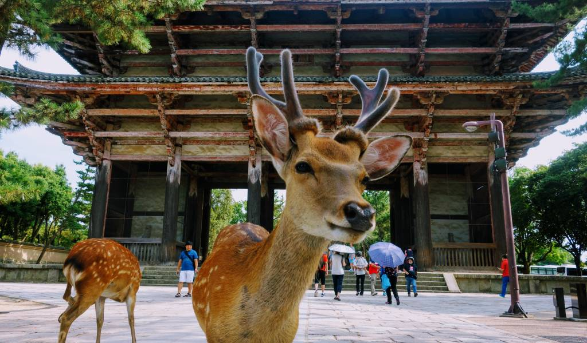

Stop 4: Nara
Nara was Japan's first permanent capital. It is home to significant historic temples and the famous Nara Park, where hundreds of freely roaming deer interact with visitors.

Photo 1: Todai-ji Temple, one of the world's largest wooden buildings.

Photo 2: Friendly, free-roaming bow-trained deer waiting for crackers in Nara Park.